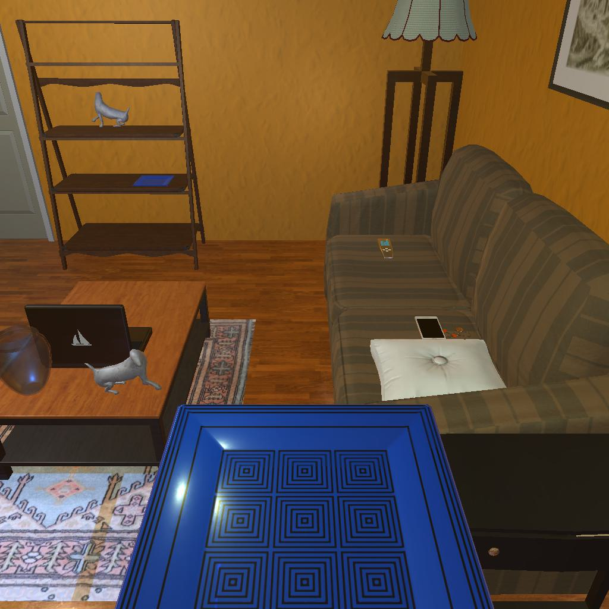

---------------------------------------------------------task: 3---------------------------------------------------------
--------------------------------------------------------------------------------------------------------------------------------------------------------------------
--------------------------------------------------------------------------------------------------------------------------------------------------------------------
Step:--------------------------------------------------------------------------18-------------------------------------------------------------------------------
----------------------------------------
VLM Prompt:
Image1:
Image2:
Image3:
**Instruction**
1. Analyze the provided images to identify all visible household objects and compare the difference between images (e.h. whether the object is opened or not and taken on hand or not), focusing on those relevant to the task description "examine the plate with the floorlamp."
2. Use the analysis of images and the task hint "The agent must find an object of the desired type, locate and turn on a light source with the desired object in-hand." to answer the question: what is the most reasonable action in the choices for the task description "examine the plate with the floorlamp"?
3. Decide and write the answer using the template: The answer is: (i): , where i is the real number. If there is no desired object in images, search every place based on **Initial Observation** to find the object. And if no one is exactly correct, choose a similar answer.
**Initial Observation**
You are in the middle of a room. Looking quickly around you, you can see armchair (1), garbagecan (1), tvstand (1), shelf (1-5), sofa (1), coffeetable (1), sidetable (1-2), drawer (1)
**Answer Choices**
(1): go to armchair 1
(2): go to garbagecan 1
(3): go to tvstand 1
(4): go to shelf 2
(5): go to sofa 1
(6): go to sidetable 1
(7): go to sidetable 2
(8): go to shelf 3
(9): go to shelf 4
(10): go to shelf 5
(11): open drawer 1
(12): close drawer 1
(13): put plate 1 in/on drawer 1
(14): examine plate 1
(15): examine drawer 1
**Answer**
Let's think step by step by following the instructions.
----------------------------------------
----------------------------------------
Original Response:
Firstly, we need to identify all visible household objects in the images.
- Image1 shows a TV on a TV stand and a glass coffee table with a blue patterned rug underneath.
- Image2 shows a sofa with a few objects on it, a side table with a lamp, a shelf with some items, and a picture on the wall.
- Image3 displays a shelf with items, a laptop on a coffee table, a pigeon figurine, and a sofa with a phone and remote on it.
Now, let's compare the differences between the images:
- The TV stand in Image1 has a closed drawer.
- The sofa in Image2 and Image3 has different objects on it; a remote and a phone are visible in Image3, whereas a book and a magazine are seen in Image2.
- The side tables and shelves have various items, but none seem to be holding a plate or are near a floor lamp.
From the task hint, we know that the agent must find an object of the desired type (a plate), locate and turn on a light source (the floor lamp) with the desired object in hand. However, none of the images show a plate or a floor lamp. Based on the initial observation, we need to search for these objects.
Given that no plate or floor lamp is visible in the images, the agent should search the areas that have not been examined yet according to the initial observation list. The most reasonable action would be to search the places where a plate might be found, which could be inside the drawer or on the shelves. Since the drawer is the only object that can be opened and might contain a plate, we will choose to open it and search inside.
The answer is: (11): open drawer 1.
----------------------------------------
----------------------------------------
>>> Refine Original VLM Response and Get Pure Action: open drawer 1
----------------------------------------
-----------------------------------------------------------------
Running time: 14.081945896148682 seconds
Total Money: 1.50561
-----------------------------------------------------------------
-----------------------------------------------------------------
Text Observation:You open the drawer 1. The drawer 1 is open. In it, you see a floorlamp 1, a pillow 1, a laptop 1, a vase 1, a statue 1, a statue 3, a cellphone 2, a plate 2, a remotecontrol 1, a newspaper 1, and a keychain 1.
-----------------------------------------------------------------
UNSUCCEED